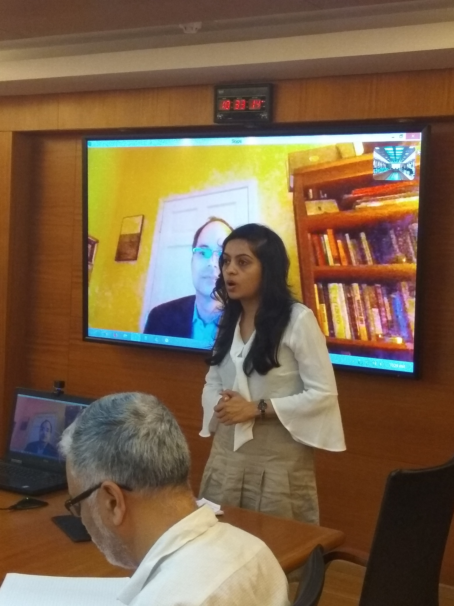
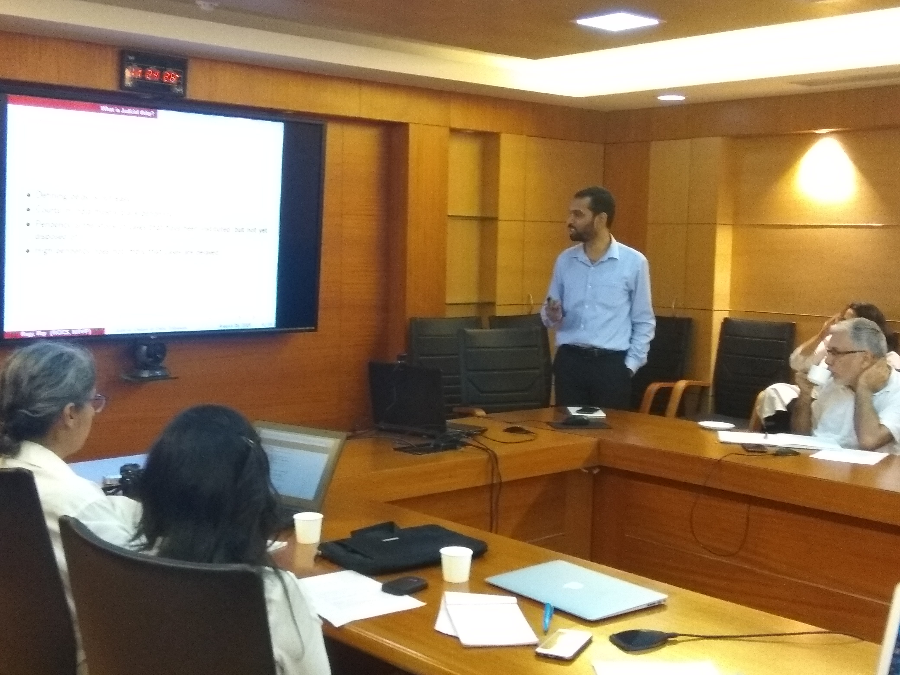
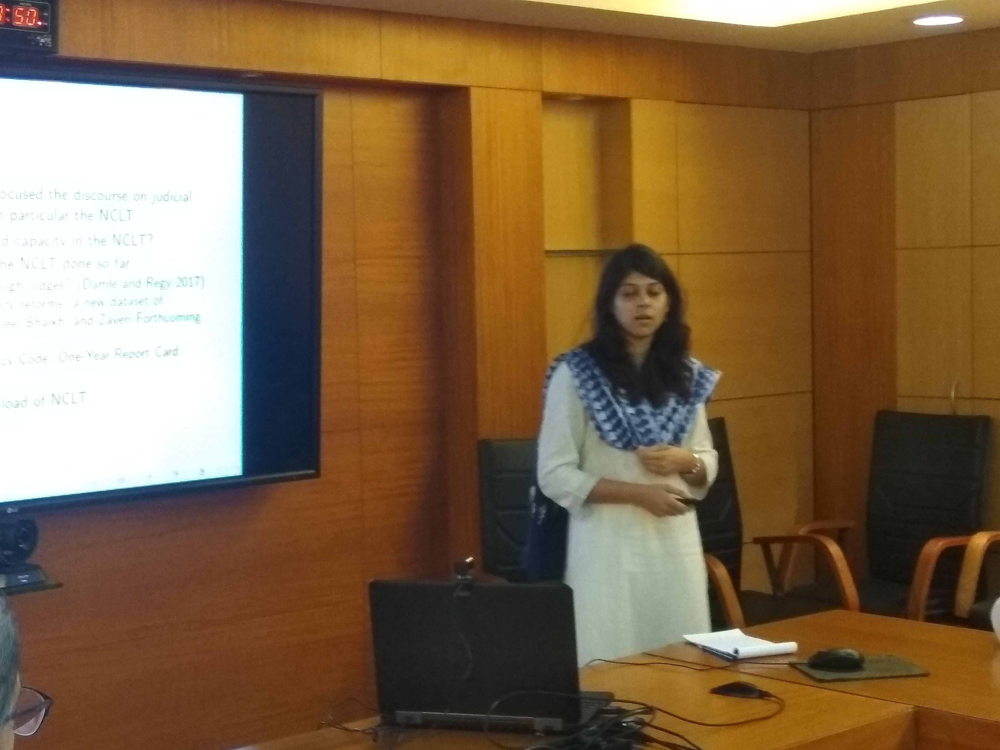
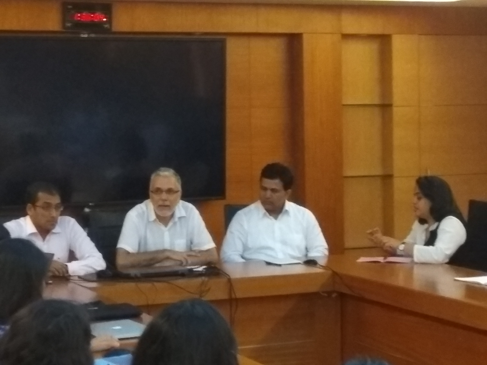
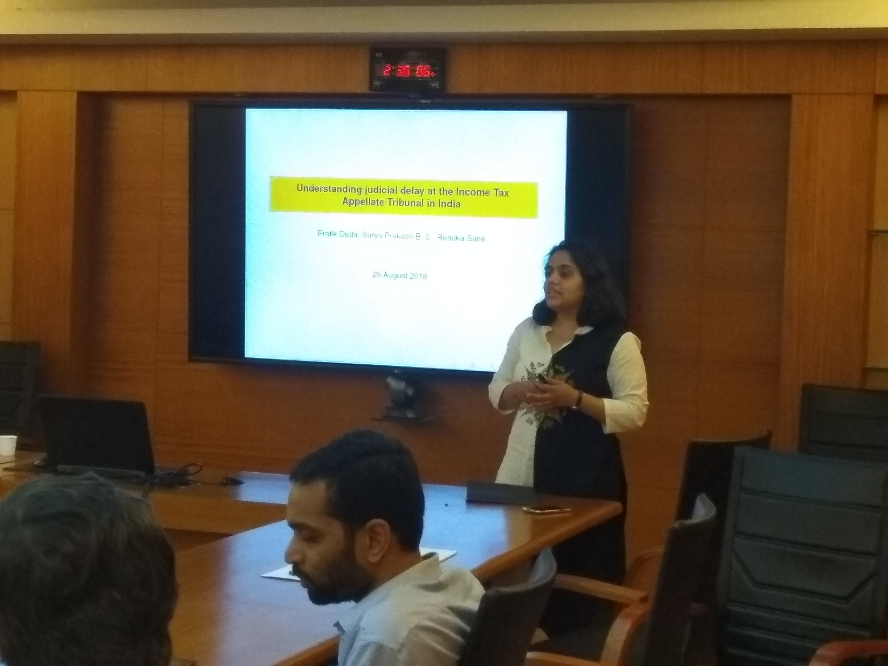
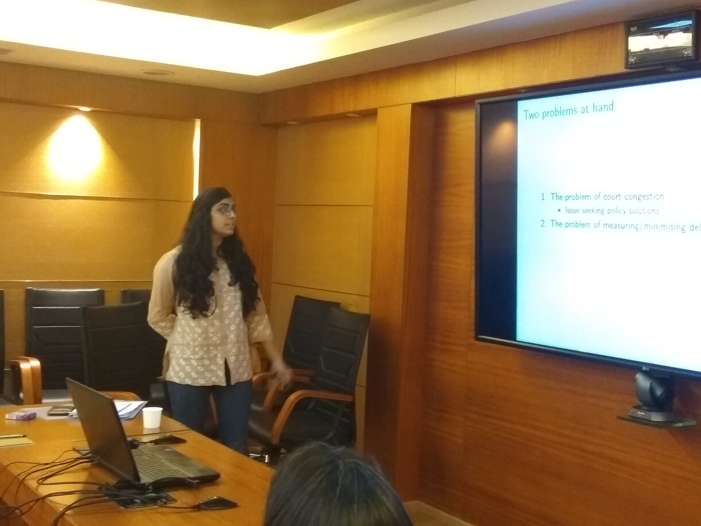
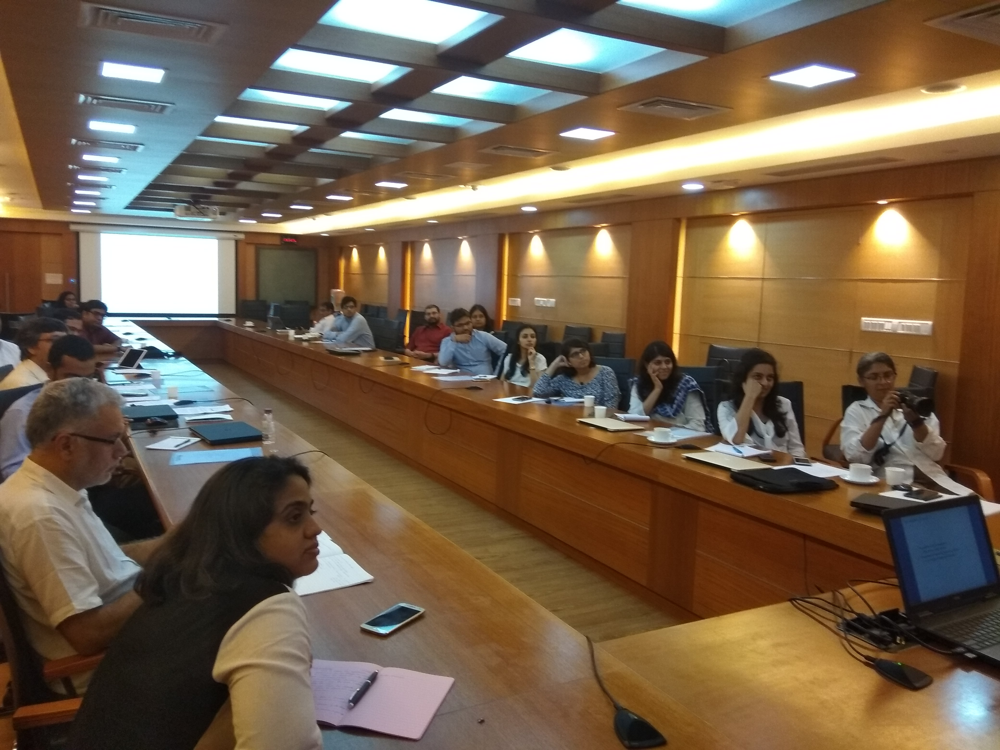

25th August, 2018
The Seanza Conference Hall, Indira Gandhi Institute of Development Research, Mumbai.
| 09:45 - 10:15 | Registration, Coffee and Tea |
| 10:15 - 10:30 | Inaugural session |
| 10:30 - 11:05 | The Supreme Court of India: An Empirical Overview
[presentation] Aparna Chandra, William H.J. Hubbard, and Sital Kalantry Presenter: William H.J. Hubbard, University of Chicago Law School Discussant: Alok Prasanna Kumar, Vidhi Centre for Legal Policy |
| 11:05 - 11:40 |
Understanding Judicial Delays at Debt Tribunals
[presentation] Shubho Roy and Prasanth Regy Presenter: Prasanth Regy, Rajiv Gandhi Institute for Contemporary Studies Discussant: Saurabh Jaywant, Chief Legal Counsel, Northern Arc Capital |
| 11:40 - 11:50 | Tea break |
| 11:50 - 12:25 | Analysing the workload of the NCLT: A sample study
[presentation] Varun Marwah, Aditi Nayak and Bhargavi Zaveri Presenter: Aditi Nayak, Finance Research Group, IGIDR Discussant: Devendra Damle, National Institute of Public Finance and Policy |
| 12:25 - 13:25 | Lunch |
| 13:25 - 14:25 | Panel: Problems with access to court data Ajay Shah, National Institute of Public Finance and Policy (Moderator) Surya Prakash, Daksh Akshat Anand, Founder, Provakil Renuka Sane, National Institute of Public Finance and Policy Somasekhar Sundaresan,Advocate |
| 14:25 - 15:00 | Understanding Judicial Delay at the Income Tax Appellate Tribunal in India
[presentation] Pratik Datta, Surya Prakash B. S., and Renuka Sane Presenter: Renuka Sane, National Institute of Public Finance and Policy Discussant: Surbhi Bhatia, Finance Research Group, IGIDR [presentation] |
| 15:00 - 15:15 | Closing remarks and way forward Susan Thomas, Indira Gandhi Institute of Development Research |






